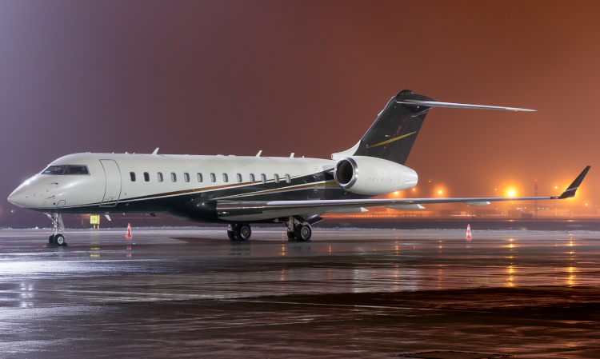

Avião faz pouso forçado
Publicado em: 20 de fevereiro de 2025
Avião moscou em Moscow e teve que fazer pouso forçado! Em um episódio tão inusitado quanto o nome da cidade, um avião fez o que pode ser considerado o "pouso mais moscado" da história da aviação. O avião, que estava tranquilo em sua rota, simplesmente decidiu "mosear" (sim, o verbo foi inventado na hora) enquanto sobrevoava Moscow. E, claro, o resultado foi um pouso forçado no meio do cenário gelado da cidade. “Eu nunca vi nada assim”, disse o comandante, tentando disfarçar a situação com um sorriso amarelo. “O avião, literalmente, quis fazer uma visita a Moscow. Já que estava lá, resolveu fazer o pouso por conta própria.” Os passageiros, em choque, não podiam acreditar no que estava acontecendo. “Eu achei que ele estava dando uma volta turística, mas não, foi pouso forçado mesmo”, comentou um dos passageiros enquanto aguardava a explicação da equipe de voo. Para os experts, o avião “moscou” devido a uma falha técnica que, segundo eles, nada tinha a ver com o nome da cidade (mas, claro, todos adoraram a coincidência). O mais engraçado é que, ao descer, o avião pareceu se divertir com o "tropeço" de seu plano de voo, já que as rodas da aeronave fizeram um barulho que lembrava um bom “pé na lama”. A situação, que poderia ser uma grande crise aérea, foi suavizada com o humor dos passageiros. "Bem, pelo menos conseguimos um 'tour' gratuito por Moscow... pena que não foi na primeira classe", disse outro passageiro, já com a cabeça em suas próximas férias. A aeronave, por sua vez, foi rapidamente inspecionada, e as autoridades confirmaram que tudo estava bem, exceto pelo fato de que o avião agora se autodenomina "experiente em Moscovo" e provavelmente estará mais atento nas próximas viagens. Em resumo, o voo não foi exatamente como o planejado, mas ao menos os passageiros têm uma boa história para contar – "Avião moscou em Moscow, literalmente!"